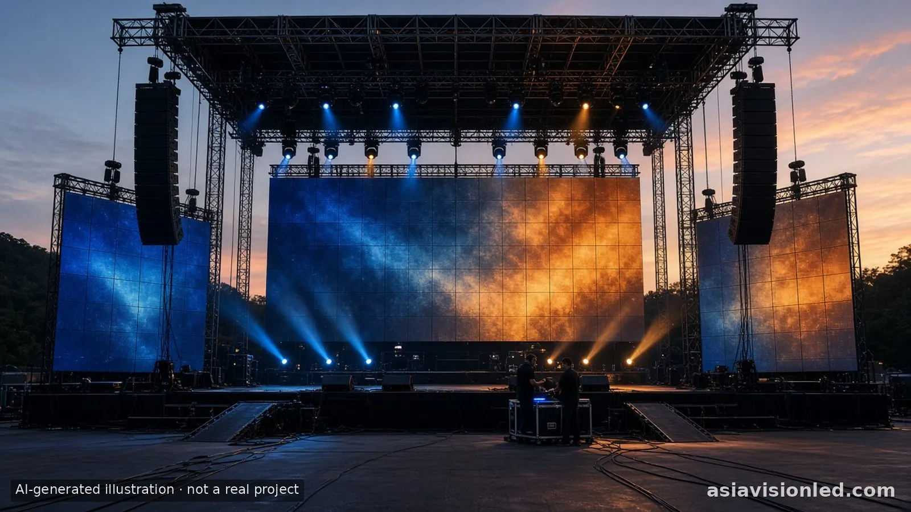
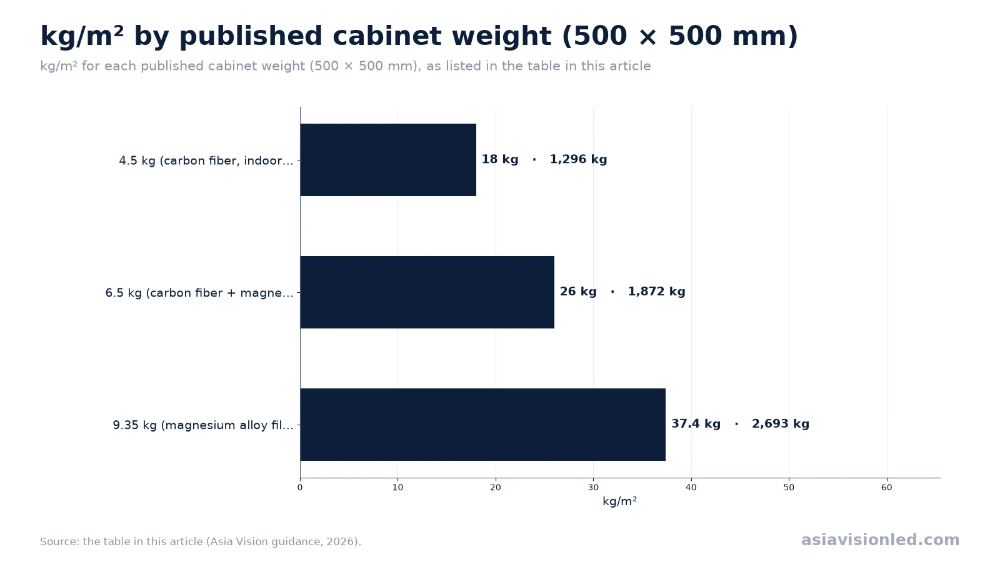
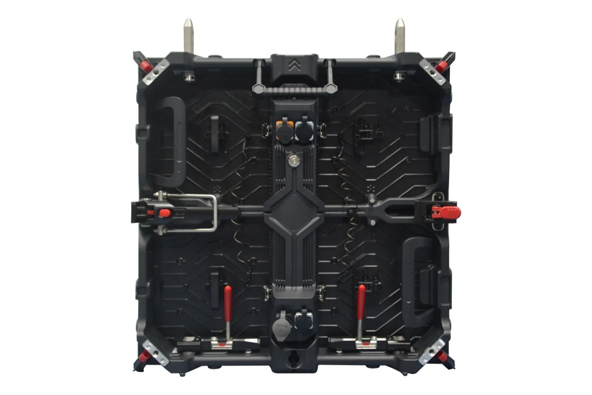
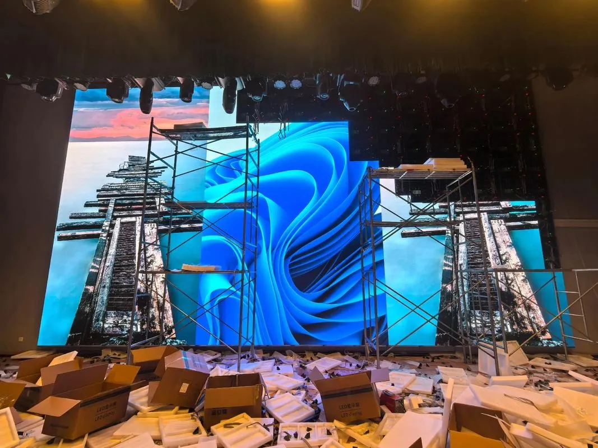

By Danny · 2026-11-09
A carbon fiber LED display cabinet is sold on one number: weight. Published 500 × 500 mm carbon fiber rental cabinets sit between about 3.9 kg and 6.5 kg. A magnesium-framed film panel of the same size weighs 9.35 kg. On a flown stage wall of a few hundred cabinets, that gap is more than a tonne. It decides how many motors you hang, how many crew you call and what fits on the truck.
Weight is not the whole story, though. The frame is also a heat path, a corrosion surface and the part that takes the knock when a case drops at load-out. This guide compares carbon fiber, die-cast aluminium and magnesium alloy frames for rental and stage fleets. It uses published cabinet specs and material datasheets, and lists the questions to ask before you commit a fleet to one material.
A note on terms: few "carbon fiber" cabinets are carbon fiber throughout. Several of the products below use carbon fiber with magnesium alloy or die-cast aluminium parts. Read the frame material line of the spec sheet, not the product name.
A fixed installation is weighed once, by a structural engineer, and then left alone. A rental cabinet is lifted by hand at every build. Stage crews lift it to waist height, lock it to the next one and hang it from a bumper under a chain motor. At the end of the night they strike it and pack it into a road case. Every kilogram is carried twice a day, by people, on a deadline.
That is why touring buyers look at kilograms per square metre rather than kilograms per cabinet. Take a 12 m × 6 m flown wall built from 500 × 500 mm cabinets: 72 m², or 288 cabinets. At the published weights below, the screen alone comes to:
| Published cabinet weight (500 × 500 mm) | kg/m² | 12 m × 6 m wall (288 cabinets), screen only |
|---|---|---|
| 4.5 kg (carbon fiber, indoor examples) | 18.0 | 1,296 kg |
| 6.5 kg (carbon fiber + magnesium hybrid) | 26.0 | 1,872 kg |
| 9.35 kg (magnesium alloy film panel) | 37.4 | 2,693 kg |
Figure 1 plots the kg/m² values from the table above for each published cabinet weight (500 × 500 mm).

These totals leave out hanging bars, cables, spare cabinets and the processor rack. Add those before you ask the rigger for a load plan. Even so, the spread between the lightest and heaviest example is about 1.4 tonnes on one wall. On an arena roof or a festival ground-support system with a fixed rated load, that can decide whether the design works at all. The structural load guide covers how engineers turn panel weight into a rigging plan.
Lighter is not automatically safer. The hanging limit is set by the locks, the hanging bars and the tested safety factor, not by the cabinet weight alone. ROE Visual, for example, rates its Carbon series for 12 panels hung in one column and 5 stacked, with a safety factor of 8, and only with its own hardware. Ask any supplier for the same three numbers in writing.
The three frame materials differ in two properties that matter for a rental cabinet: density (how heavy a frame of a given size is) and thermal conductivity (how well the frame spreads heat away from the LEDs and power supply).
Base-material values from published datasheets and a peer-reviewed study. A finished cabinet adds modules, power supply, seals and locks.
| Material | Density | Thermal conductivity | Source |
|---|---|---|---|
| ADC12 die-cast aluminium | 2.68 g/cm³ | 120–130 W/m·K | Raffmetal ADC12 datasheet |
| A380 die-cast aluminium | 2.71 g/cm³ | 96.2 W/m·K | NADCA 2012 alloy table |
| AZ91D magnesium alloy | 1.81 g/cm³ | 72 W/m·K | NADCA 2012 alloy table |
| Carbon fibre/epoxy laminate (66.5% fibre volume) | 1.53 g/cm³ | 0.61 W/m·K through the thickness | Bard et al., Materials 12 (2019) |
Per cubic centimetre, magnesium is about a third lighter than die-cast aluminium, and carbon fibre laminate is lighter again. Carbon fibre is also much stiffer for its weight along the fibres, which is why a carbon frame can use thinner sections. The trade-off is heat. Across the thickness of the laminate, carbon fibre/epoxy conducts heat at well under 1 W/m·K. Die-cast aluminium conducts it at about 100 W/m·K. In an aluminium cabinet the frame and backshell act as a heat sink. In a carbon frame they do not, so the heat has to leave through the module backs, the power-supply housing or the air.
Thermal expansion matters at the seams. Using the published coefficients (about 21 µm/m·K for ADC12 and 25 µm/m·K for AZ91D), a 500 mm frame grows by about 0.42 mm (aluminium) or 0.50 mm (magnesium) over a 40 °C swing. That is roughly the gap between a cold morning load-in and a stage in afternoon sun. A good lock and alignment system absorbs it. If a wall mixes cabinets with different frame materials, their seams can move by different amounts, so test a mixed wall before a show rather than during one.
Figure 2 shows the rear of a touring rental cabinet.

The table and chart below use weights as published by manufacturers on their own spec pages, fetched on 9 November 2026. They are not our measurements, and they are not like-for-like: pixel pitch, IP rating and power supply differ. That is the point. A "carbon fiber" label does not guarantee the lightest cabinet. The full specification does.
Published weights only; the lightest carbon fiber examples are indoor products with IP20 or IP40 ratings.
| Product (as published) | Frame material | Weight | Depth | Rating / service |
|---|---|---|---|---|
| Redot RC-i3.9, P3.9 | Carbon fibre | 3.9 kg | 66 mm | IP40, front/rear service |
| Visual World CF series, P2.6–P4.8 | Carbon fibre | 4.5 kg | — | IP20, front & rear service |
| Linsn CF500-PRO, P3.9 | Carbon fibre | 4.5 kg | — | Front or rear maintenance |
| BAKO carbon fiber rental, P2.6/P3.91 | Carbon fibre | 5.3 kg | — | Quick lock, hang or stack |
| Xinglu TS series | Carbon fibre + magnesium alloy, die-cast aluminium | 6.5 kg ±10% | 75 mm | IP31 indoor / IP65 outdoor |
| ROE Black Pearl BP2V2 | Magnesium alloy | 9.35 kg | 90 mm | Film/XR panel |
Three patterns stand out. First, the lightest carbon cabinets are indoor products rated IP20 or IP40. An outdoor IP65 cabinet needs gaskets, sealed connectors and a heavier power box, whatever the frame. Second, at the larger 600 × 1200 mm size, ROE's outdoor CB5 weighs 13.85 kg. That is about 19.2 kg/m², close to the indoor 500 mm carbon examples. So an outdoor carbon panel can still be light per square metre. Third, the products that call themselves carbon fiber often list a second material, usually magnesium or aluminium. Ask which parts are which.
LEDs and drive ICs lose efficiency and lifetime as they run hotter. In a conventional die-cast cabinet, part of that heat goes into the metal and spreads across a large surface. A carbon frame is a poor conductor, so the designer has to give the heat another way out: an aluminium power-supply housing, a module back plate that acts as a heat spreader, or vents.
That does not make carbon cabinets unreliable. It means the thermal test result matters more than the frame material. Ask for:
For outdoor daytime shows, where cabinets run near full brightness in direct sun, this is the question that separates a light cabinet from a light cabinet that lasts. The cooling and ventilation guide explains how heat load scales with brightness.
Figure 3 shows a rental wall during the stage build.

Carbon fibre conducts electricity, and in the galvanic series it sits far from aluminium. When carbon and aluminium touch and moisture bridges the joint, the aluminium corrodes. Aerospace design guides state it plainly: carbon fibres must be isolated from aluminium or steel with a barrier such as a glass ply or liquid shim. Research on aluminium bolted to carbon composites found that galvanic corrosion rates rose by more than an order of magnitude once chloride levels passed about 1,000 ppm. That is the territory of sea air, road salt and sweat.
For a hybrid LED cabinet, that means the joints between the carbon frame and the metal locks, handles, hinges and fasteners need to be designed for it. Magnesium parts need the same care. Ask the supplier how the carbon parts are isolated from metal fittings, and whether the cabinet has passed a salt-spray or damp-heat test, with the report. A coastal festival season is a hard test for any frame. A mixed-material frame without isolation will show it first, at the lock points.
Die-cast aluminium has its own weather limits. The ADC12 datasheet itself notes limited resistance to weathering and seawater, which is why outdoor cabinets are coated. Whatever the frame, the IP rating of the whole cabinet, front and rear, is what keeps water out. See the IP rating guide.
Rental cabinets get dropped. A die-cast aluminium corner that takes a knock usually dents. The damage is visible, and a bent lock bracket can often be swapped. A composite frame behaves differently: carbon laminate tends to crack or delaminate rather than dent, and the damage is not always obvious from the outside. That matters for a fleet that changes hands between crews every week.
Before buying a carbon fleet, ask whether frame parts can be replaced individually or only as a whole cabinet, what a replacement frame costs, and how long the parts will stay available. A fleet is a five-to-ten-year asset. Parts availability for an unusual frame is a commercial risk as much as a technical one. Good road cases help whatever the frame. The transport case guide covers foam, stacking and case weight. Lighter cabinets in heavy cases give back part of the weight saving.
The matrix below summarises the trade-offs. It is an editorial assessment based on the material data and published specs in this article, not a test result.
Qualitative guide; confirm against the supplier's own test reports.
| Fleet profile | Usual best fit | Why |
|---|---|---|
| Arena and festival touring, large flown walls | Carbon fiber or magnesium hybrid | Weight per m² limits roof and ground-support loads, and crew hours |
| Corporate and conference rental, indoor | Any; carbon if crews are small | Light handling matters; heat and weather loads are low |
| Outdoor events in sun, rain or coastal air | Die-cast aluminium, or carbon with proven isolation and IP65 tests | Heat path and corrosion matter more than the last kilogram |
| XR and broadcast stages | Decide on flatness, seams and refresh first | Image quality on camera comes before weight |
| Fleets topped up over many years | Whatever matches the existing stock | Mixing frame materials complicates seams, spares and locks |
If you are adding to a fleet you already own, the existing locks, hanging bars and spare parts often decide the answer. Matching them is usually cheaper than saving two kilograms per cabinet. The rental cabinet selection guide covers the rest of that decision.
Our current rental range is built on die-cast aluminium, with a plastic backshell on the indoor E-PRO build:
| Series | Technology | Cabinet | Notes from the product page |
|---|---|---|---|
| COB Z | Flip-chip COB, P1.95 / P2.6 | 500 × 500 mm, no backshell | ±5° arc and right-angle splicing, ≥7680Hz refresh |
| COB ZH | Flip-chip COB, P1.95 / P2.6 | 500 × 1000 × 94 mm, die-cast aluminium | Wind resistance up to 20 m/s, −7.5° to +7.5° curving |
| E-PRO | SMD or COB | 500 × 500 / 500 × 1000 mm | Plastic backshell indoor, die-cast aluminium outdoor |
| S Series | SMD | 500 × 500 / 500 × 1000 mm | Universal indoor and outdoor rental platform |
COB modules are made by bonding bare LED chips directly to the board. There is no SMT placement step, and the face is sealed, which is the main reason COB suits panels handled every day. Asia Vision runs 8 IC production lines and 7 SMD production lines in Shenzhen, so SMD and COB fleets come from the same factory. Control is NovaStar by default, with ColorLight as the alternative and MQ available where a fleet already runs it.
If your fleet needs a lower weight than our standard cabinets, send the target kilograms per square metre, the pitch and the IP rating. We will tell you honestly what is achievable before you order. Orders carry a 3-year standard warranty and leave the Shenzhen factory within 18 days of order confirmation (18-day factory dispatch). There is no minimum order quantity and no tooling fee. Certifications, including UL and ETL, are applied for to suit each customer's market.
Take the answers back to your rigger and your crew chief, not only your accountant. The cheapest cabinet per square metre is rarely the cheapest over a season of builds. The stage LED rental guide and the COB touring guide cover the rest of a touring specification.
Send the wall size, pitch, IP rating and your target kg/m². We will recommend a cabinet, the spares and the control setup (NovaStar by default). Email info@asiavisionled.com or message us on WhatsApp at +86 172 7666 5558.
Request Rental Spec AdviceChat on WhatsApp